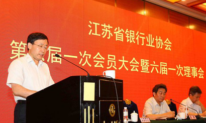

和基础设施；中国金融综合监管改革迈出了第一步；铁路投融资体制改革是变相发债；【市场】三中全会前发展民营银行或将有所突破a；苏宁云商确认将筹备申请成立银行；上海自贸区将对服务业产生不小的吸引力；LED照明产业已步入大企业格局时代；【经营】P2C国家队——江苏省“开鑫贷”模式受热捧；广发银行推出“生意人贷”新产品；【动态】2013中国银行业文明规范服务百佳江苏申报名单已上报中银协；【风险】警示亚太有出现金融风暴的迹象，中国银行业的风险或将上升；钢铁业洗牌民营钢企将首当其冲；实力弱的地产商仍存信托兑付风险。谢谢！